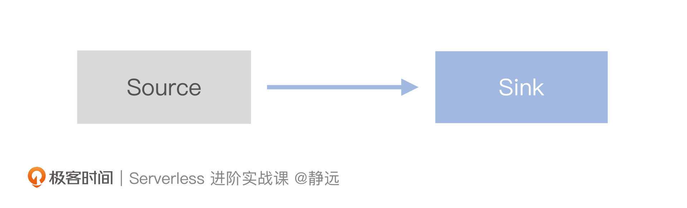

- 00 开篇词 Serverless是降本增效浪潮下的必然选择.md.html
- 00 思维构建 如何在新赛道下进阶Serverless能力？.md.html
- 01 生命周期：函数计算的基本流程是如何执行的？.md.html
- 02 触发器：如何构建事件源与函数计算的纽带？.md.html
- 03 高级属性：应对生产级别的应用，你需要掌握哪些技能？.md.html
- 04 冷启动：如何加快函数的第一次调用过程？.md.html
- 05 扩缩容：如何应对流量的波峰波谷？.md.html
- 06 流量转发：函数在不同情形下是如何执行的？.md.html
- 07 运行时（上）：不同语言形态下的函数在容器中是如何执行的？.md.html
- 08 运行时（下）：不同语言形态下的函数在容器中是如何执行的？.md.html
- 09 小试牛刀（一）：如何利用函数之间的调用解决业务问题？.md.html
- 10 小试牛刀（二）：如何突破VPC网络的速度限制？.md.html
- 11 WebIDE：如何让函数远离繁琐的本地开发模式？.md.html
- 12 编排：如何协调多任务的运行？.md.html
- 13 可观测（上）： 如何构建多维度视角下的Serverless监测体系？.md.html
- 14 可观测（下）： 如何构建多维度视角下的Serverless监测体系？.md.html
- 15 选型：不同阶段的数据应如何存储？.md.html
- 16 动手体验（一）：如何实现业务高效率地开发上线？.md.html
- 17 动手体验（二）：如何在云函数场景下实现一个有状态的服务？.md.html
- 18 实战指南：Serverless沙场老兵的一线使用经验.md.html
- 19 实战进阶（一）：Serverless “连接器” 的能力到底有多大？.md.html
- 20 实战进阶（二）：如何基于智能音箱开发一个BOT技能？.md.html
- 21 实战进阶（三）：传统的服务如何迁移到Serverless平台？.md.html
- 22 私有云：赛马时代的Serverless核心引擎谁能胜出？.md.html
- 23 实战进阶（四）：如何从0到1进阶一个开源引擎？.md.html
- 24 实战进阶（五）：如何从Serverless引擎蜕变成一个Serverless平台？.md.html
- 结束语 在实战中把握事物本质，不断革新.md.html
- 捐赠
23 实战进阶（四）：如何从0到1进阶一个开源引擎？
你好，我是静远。
从这节课开始，我们就要完整体验一个Serverless平台的构建，学习其中的注意事项了。
今天的前半节课，我们会从环境准备、组件安装以及组件验证几个角度先重点演练一遍Knative核心组件的部署和验证，后半节课，我们再去探讨一下，在面临一个开源Serverless框架的时候应该怎么去学习。
在实战开始之前，你可以先复习一下扩缩容和流量转发这两节课中Knative的知识点，再来开始动手实操。
话不多说，我们现在就开始实操准备吧。
环境准备
由于Knative本身完全依赖于Kubernetes，因此我们需要提前准备一个Kubernetes集群，对于集群的规格，官网也有建议，你可以参考最新版本来进行。
原型环境方面，如果只是搭建一个试用的原型Knative函数环境，那么至少需要一个单节点K8s集群，并且这个节点的规格至少应该是2核4GB。
如果想达到生产级别的Knative函数环境，单节点集群的规格至少应该是6核6G以及30G的磁盘空间，多节点环境的规格应该保证每个节点都是2核4G以及20GB的磁盘空间。另外，还有几个要点需要注意：
- 必须保证K8s集群版本应该至少是1.22以上；
- 必须安装K8s的命令行访问工具kubectl；
- 必须保证K8s能够正常访问到镜像仓库。
这节课，我会按照生产级别环境搭建，其中K8s集群节点数量为2，每个节点的规格为4核8G，同时配备50GB磁盘空间。我选择了百度智能云CCE来构建K8s集群。
组件部署与验证
准备好K8s集群环境以后，我们就可以开始在集群上部署Knative Serving组件了。不要着急，我们一步步来。
部署Serving组件
首先，我们来部署Serving组件，按照官网命令即可：
kubectl apply -f https://github.com/knative/serving/releases/download/knative-v1.4.0/serving-crds.yaml
kubectl apply -f https://github.com/knative/serving/releases/download/knative-v1.4.0/serving-core.yaml
部署之后，在knative-serving这个namespace下，所有的Pod都应该是Running状态：
$ kubectl get pod -n knative-serving
NAME READY STATUS RESTARTS AGE
activator-847d5df4bc-psd7k 1/1 Running 0 47h
autoscaler-65898c7fcf-wkkmc 1/1 Running 0 46h
controller-775b774844-fwm2k 1/1 Running 0 46h
domain-mapping-555ff9b9c8-8dtcw 1/1 Running 0 46h
domainmapping-webhook-57456fcb8c-x6frp 1/1 Running 0 46h
net-istio-controller-59b6b7765-z8w2g 1/1 Running 0 46h
net-istio-webhook-6b98fd5bd4-4pcdf 1/1 Running 0 46h
webhook-7f987868-5f8bg 1/1 Running 0 46h
如果出现异常，那么可以通过kubectl describe 查看Pod部署卡在哪一步了，你可以参考如下的命令查看：
kubectl describe pod controller-744577dddc-7jf5r -nknative-serving
注意，如果是网络问题，可能会出现下载镜像卡住的情况，这个时候通过Google Cloud虚机下载镜像，上传到可访问的镜像仓库上就可以，或者直接找到可供访问的镜像仓库，手工替换掉gcr.io的镜像包。
部署网络组件
完成Serving 组件的部署，我们就需要部署Knative所依赖的网络组件了。官网推荐了三种，我们以Isito来部署。
kubectl apply -l knative.dev/crd-install=true -f https://github.com/knative/net-istio/releases/download/knative-v1.4.0/istio.yaml
kubectl apply -f https://github.com/knative/net-istio/releases/download/knative-v1.4.0/istio.yaml
kubectl apply -f https://github.com/knative/net-istio/releases/download/knative-v1.4.0/net-istio.yaml
完成之后，我们需要检查一下istio-system的namespace下pod是否正常：
$ k get pod -nistio-system
NAME READY STATUS RESTARTS AGE
istio-ingressgateway-666588bf64-jpwgl 1/1 Running 0 46h
istiod-56967d8fcc-d6vmr 1/1 Running 0 46h
istiod-56967d8fcc-f46kr 1/1 Running 0 2d2h
istiod-56967d8fcc-mmfkd 1/1 Running 0 46h
同时还需要检查一下是否能够获得gateway的external-ip，用于后续的函数访问：
$ kubectl --namespace istio-system get service istio-ingressgateway
NAME TYPE CLUSTER-IP EXTERNAL-IP PORT(S) AGE
istio-ingressgateway LoadBalancer 10.0.142.236 182.61.144.199,192.168.0.2 15021:31462/TCP,80:30977/TCP,443:32684/TCP 2d2h
这里需要说明一点，百度智能云CCE里，如果用户创建类型是LoadBalancer的Service，默认情况下，CCE会联动的创建BLB，并为此BLB绑定EIP。所以你可以看到表格中显示的EIP地址是182.61.144.199。
部署Eventing组件
接着我们再来安装一下Eventing的相关组件。Eventing的安装和Serving类似，包括两个yaml文件：
kubectl apply -f https://github.com/knative/eventing/releases/download/knative-v1.4.1/eventing-crds.yaml
kubectl apply -f https://github.com/knative/eventing/releases/download/knative-v1.4.1/eventing-core.yaml
执行完成后，我们来检查一下knative-eventing这个命名空间下的pod是否正常运行：
$ kubectl get pod -n knative-eventing
NAME READY STATUS RESTARTS AGE
eventing-controller-c7bdccd6d-ktnmc 1/1 Running 0 13m
eventing-webhook-7c49c58fcb-ng576 1/1 Running 0 13m
如果部署成功的话，应该可以看到这个命名空间下有两个running状态的pod，如果出现Error，那么还是按照我们在小试牛刀这节课中讨论的方法，通过kubectl的describe命令查看错误原因，对症下药即可。
部署完Serving和Eventing，你会发现，是不是还缺少Tekton组件？我把它作为课后作业留给你来进一步演练，你可以按照同样的方式进行部署。需要注意的是，Tekton是从Knative的Building组件孵化出来的，目前功能已经相当丰富，涉及的组件较多，因此最好根据官网的安装手册一步一步进行部署，避免遗漏。
到这里，你的Knative组件已经可以正常运行了，接下来我们尝试执行一个简单的Demo验证一下。
验证函数调用
我们先验证一下Knative最基本的函数调用功能，确保Serving组件能够正常运行。这里我使用的是官网给的helloworld-go的例子进行演示，我将handler中的响应内容改成了如下的打印语句“Hello Serverless!”：
func handler(w http.ResponseWriter, r *http.Request) {
log.Print("helloworld: received a request")
fmt.Fprintf(w, "Hello Serverless!\n")
}
改完代码之后，我们接着进行镜像打包，这里需要注意下，如果你电脑是mac 的m1，需要加上 –platform linux/amd64 这个参数，如下所示：
$ docker --platform linux/amd64 build -t jingyuan/hello:v1 .
然后，就可以将镜像推送到一个集群可以访问到的仓库中，这里我使用的是CCR，具体使用可以参照他的说明文档，接着，我们替换一下knative demo中service.yaml的image，然后执行kubectl apply就可以了。
apiVersion: serving.knative.dev/v1
kind: Service
metadata:
name: helloworld-go
namespace: default
spec:
template:
spec:
containers:
- image: jingyuan/hello:v1
env:
- name: TARGET
value: "Go Sample v1"
我这里只使用了最简单的一些字段，你还可以在Knative Service中设置不同的revision以及流量比例。- 最后会是什么样的效果呢？我们来一起看下：
curl -H "Host: helloworld-go.default.example.com" http://182.61.144.199
返回：
Hello Serverless!
这一步，如果你观察仔细的话，会发现在default 命名空间下，在调用之前是不存在helloworld-go函数的相关pod的，而在调用之后产生了，这其实就是第一次调用产生的冷启动现象了。
验证事件触发
最后，我们再来验证一下Knative的事件触发功能，确保Eventing的组件确实能够正常工作。这里我们采用官网给出的PingSource模型进行验证，我们首先创建一个用于接收事件的服务，名为 event-display。这里采用的是官网的Demo，它的deployment和service定义如下：
apiVersion: apps/v1
kind: Deployment
metadata:
name: event-display
namespace: default
spec:
replicas: 1
selector:
matchLabels: &labels
app: event-display
template:
metadata:
labels: *labels
spec:
containers:
- name: event-display
image: gcr.io/knative-releases/knative.dev/eventing/cmd/event_display
---
kind: Service
apiVersion: v1
metadata:
name: event-display
namespace: default
spec:
selector:
app: event-display
ports:
- protocol: TCP
port: 80
targetPort: 8080
接着创建一个 PingSource 对应：
apiVersion: sources.knative.dev/v1
kind: PingSource
metadata:
name: test-ping
namespace: default
spec:
schedule: "*/1 * * * *"
contentType: "application/json"
data: '{"message": "Hello geek!"}'
sink:
ref:
apiVersion: v1
kind: Service
name: event-display
它的含义是根据Schedule定义的规则每分钟发送一次data指定的数据，发送的目的端是Sink.name指定的服务 event-display ，即我们前一步定义的Service。
接着，我们可以查看一下knative-eventing命名空间下的deployment，会发现多了一个pingsource的deployment，这就是事件的生产者，会根据 PingSource 对象的定义，产生事件并发送给对应的服务。
$ kubectl get deploy -nknative-eventing
NAME READY UP-TO-DATE AVAILABLE AGE
eventing-controller 1/1 1 1 3h36m
eventing-webhook 1/1 1 1 3h36m
pingsource-mt-adapter 1/1 1 1 3h36m
然后我们查看刚才部署在default 命名空间下的pod ，并查看他的日志，可以看到每分钟打印的消息：
$ kubectl logs event-display-685f8f46f4-k5dbw
2022/10/07 01:06:32 Failed to read tracing config, using the no-op default: empty json tracing config
☁️ cloudevents.Event
Context Attributes,
specversion: 1.0
type: dev.knative.sources.ping
source: /apis/v1/namespaces/default/pingsources/test-ping
id: caa8d0f9-f3bb-4c4d-a777-749241a9cb32
time: 2022-10-07T06:52:00.301997865Z
datacontenttype: application/json
Data,
{
"message": "Hello geek!"
}
☁️ cloudevents.Event
Context Attributes,
specversion: 1.0
type: dev.knative.sources.ping
source: /apis/v1/namespaces/default/pingsources/test-ping
id: a029df47-fd4b-4eb4-986d-75d6dd9814d0
time: 2022-10-07T06:53:00.001908595Z
datacontenttype: application/json
Data,
{
"message": "Hello geek!"
}
☁️ cloudevents.Event
Context Attributes,
specversion: 1.0
type: dev.knative.sources.ping
source: /apis/v1/namespaces/default/pingsources/test-ping
id: b4331a71-031f-4b3a-93cb-8764a0c5830e
time: 2022-10-07T06:54:00.309563083Z
datacontenttype: application/json
Data,
{
"message": "Hello geek!"
}
到这里，我们就完成了Knative最基本的函数调用以及事件触发功能的验证，我们来总结一下。Knative的安装大致分为环境准备、组件部署以及功能验证三个部分，这也是安装任意一个Serverless框架的基本思路。
- 环境准备：你需要在安装之前就在官网的安装手册上了解清楚相关内容，尤其要注意对资源、操作系统、依赖版本的限制，一旦没有注意到，可能往往问题到安装的最后一步才会暴露出来，费时费力。比如我们这个版本的Knative就明确要求K8s的版本要达到1.22以上，并且多节点集群下，单节点的规格也至少是2核4G。
- 组件部署：这里我建议直接参照官方的安装手册进行，因为网上的很多技术博客写的并不全面，并且版本可能和你计划安装的也有差别。同时也要注意一些镜像的访问问题，受限于网络问题，需要你自己去寻找国内的镜像源进行替换才能成功。
- 功能验证：完成组件安装后，最重要的还是进行功能验证，这一步我建议不要一上来就选用复杂的case测试，而是先用最简单的demo去验证，看看基本的功能有没有问题，保证基本的工作流程以后，再验证扩展功能，这样不仅可以让你在最短的时间内验证完组件的部署正确性，还能够降低问题的排查难度。
如何学习一个开源serverless引擎
结合之前的理论学习和本节课的实操，相信你对Knative已经有了一个比较全面的认识了，但我相信，在你之后搭建Serverless引擎的过程中，还会遇到Knative更多的特性。课程中，我们不可能面面俱到，不过像是Knative中 Triggers、Sinks、CLI等知识点，你完全可以通过我们总结的方法举一反三的学习起来。
什么意思呢？
拿到一个开源框架，我的攻坚三步曲是“上手体验”“研究架构”“深入源码”，我们逐一探讨下。
上手体验
在接触到任何一个开源Serverless引擎时，我并不建议一开始就通过网上的资料去学习各种概念、架构原理以及源码分析，这对于刚接触到引擎框架的你来说几乎没有任何帮助，这些繁杂的概念反而会让你一头雾水。
相反，上手体验永远应该放在你学习一个框架的第一步。使用带来的直观感受能够帮助你更快地理解这个框架最基本的产品形态以及工作过程。
这节课我并没有上来就给你长篇介绍Knative的各种概念，而是直接手把手带你体验了从搭建Knative到跑起来两个demo的整个过程，动手之后，你基本就清楚整个Knative运作需要哪些组件，同时也能观察到一些现象（比如冷启动、事件触发过程）了。这样的操作过程，会让你后续的学习更加高效。
另外，有一个小技巧。很多成熟的框架，在官网除了常规的搭建步骤，还提供了非生产线部署的Quick Start 部署方式（比如我们这节课要学习的knative quick start），可以帮你更快地体验。
研究架构
在体验完简单的功能之后，我们再回过头来去学习基本的概念，就很容易结合前面的操作去理解了。在这个阶段，我建议你采用由全貌到细节的一个学习思路，先学习基本概念以及整体的架构，接着再深入到某一个具体的处理流程或者组件中去进行探究。
在体验过Knative 之后，我们再去学习Serving中一些组件的交互过程，你就很容易理解了。就像这一块核心逻辑我之前已经提前带你学习过了，但在这节课实操之后再回过头看一看，是不是就更好理解了呢?
比如冷启动过程，我们通过动手操作发现了第一次请求函数时，实例会从无到有，并且隔一段时间不请求后，实例又会被释放，这就很容易让你明白Activator的作用，以及AutoScaler的扩缩容流程。
再来，Knative中的事件驱动机制。我们部署了一个用于打印事件的服务以及一个定时产生事件的PingSource对象，接着，我们可以观察到定时事件的任务处理。这个时候我们再去从宏观的角度学习Eventing，就可以明白为什么他是一套松耦合的事件驱动体系了。
在Eventing的事件驱动的体系中，你可以通过API进行事件的创建，而事件将由事件的生产者发起，由事件的消费者接收。系统学习过后，你也可以知道我们的Demo是多种事件驱动模式中最简单的一种——Source&Sink模式。

其中，Source声明的是事件源与事件接受者的一个关联关系，而Sink表示一个可以接收事件的对象。结合前面的实践过程，你一定可以理解，我们部署的PingSource对象就是一个Source类型，event-display就是一个事件接收的服务。再去细究PingSource的yaml，可以看到Shedule定义的是定时触发的cron表达式，而sink.name表示事件将交由event-display处理。
apiVersion: sources.knative.dev/v1
kind: PingSource
metadata:
name: test-ping
namespace: default
spec:
schedule: "*/1 * * * *"
contentType: "application/json"
data: '{"message": "Hello geek!"}'
sink:
ref:
apiVersion: v1
kind: Service
name: event-display
这样下来，理解起来是不是就很迅速了呢？学习了这种最基础的事件驱动模型，你还可以再进一步去学习Channel&Subscription 以及 Broker&Trigger 这两个较为复杂的模型，通过这样的动手实践，由浅入深，不仅可以让你学得更快，还能记得更牢。
深入源码
对整体的架构以及关健处理流程有了一个清晰的认知以后，就可以深入到源码当中去了，源码能够帮助你更好地理解引擎框架设计者的思路。这其实是一个更高的要求，需要你对框架开发语言以及代码编写风格都有一定的掌握，才能够更好的理解。
源码的阅读途径也比较丰富，除了官方文档以外，开源的框架代码基本都会放在Github，对于一些较难理解的地方，也可以通过阅读博客以及社区留言等方式去解决。
以Knative为例，Github包含了它全套的代码，除了Eventing和Serving这两个核心组件代码库，还包含客户端、一些使用文档等，对于一些像扩缩容一类的关键流程，有些Contributor甚至还会专门给出详细的流程说明，可以说是非常全面了。遇到问题的时候，Issue也能给你一定程度的参考。除此之外，Knative的官方也有一些不错的技术博客，这些都是能帮助你深入到源码的有效手段。
最后，在学习Serverless框架时，提前的知识储备也很重要，比如学习Knative之前你至少需要对K8s的基本概念有一些了解，而涉及到源码部分，还需要掌握Golang的基本语法等等。
这些学习经验其实并不局限于本节课Knative的学习，希望你更能够举一反三，灵活运用到之后遇到的每一个新框架的学习过程中去。
小结
今天这节课，你应该对Knative的核心组件有了更直观的了解：Serving提供了管理整个Serverless工作负载的能力，Knative Serving 通过自定义的一组特定对象，使用 Kubernetes CRD（自定义资源）的方式，配合上Activator以及AutoScaler等关键组件，从而实现了整个流量控制和自动扩缩容能力。
Knative Eventing实际上是一组API，能够帮助你使用事件驱动的方式对函数进行调用。Source与Sink模型是Knative中最简单的事件驱动模型，除此之外，还有Channel&Subscriptions和Broker&Trigger。前者提供了一种事件传输机制，能把事件分发给多个目的地或Sink。后者跟前者类似，但不同的是后者更方便对事件进行过滤，适用于一个 namespace 下的多个事件源，然后消费者根据事件的类型、属性挑选感兴趣的事件进行消费。
Tekton组件主要负责从代码仓库获取源码并编译成镜像，推送到镜像仓库，所有这些操作都是在Kubernetes Pod中进行的。
整体而言，Tekton补充的是Knative快速开发与集成的能力，提升了开发与部署的效率；Eventing则通过松耦合的构造以及对CloudEvents的支持，极大地丰富了Knative 的应用场景；Serving组件贯穿到了整个Serverless容器的生命周期。
最后我想跟你说的是，Serverless的技术是在不停更迭的，我们需要灵活地研究一个新发布的Serverless引擎、框架、平台，你可以通过直接上手体验，再去研究架构原理，最后深入源码细节升华的方式进行学习。
课后作业
好了，这节课到这里也就结束了，最后我给你留了一个课后作业。
你可以继续尝试搭建一下Knative Tekton，并且看看能否通过Trigger搭建一个完整的CI/CD系统？如果有问题，欢迎你在留言区和我交流讨论。
感谢你的阅读，也欢迎你把这节课分享给更多的朋友一起阅读。
© 2019 - 2023 Liangliang Lee. Powered by gin and hexo-theme-book.